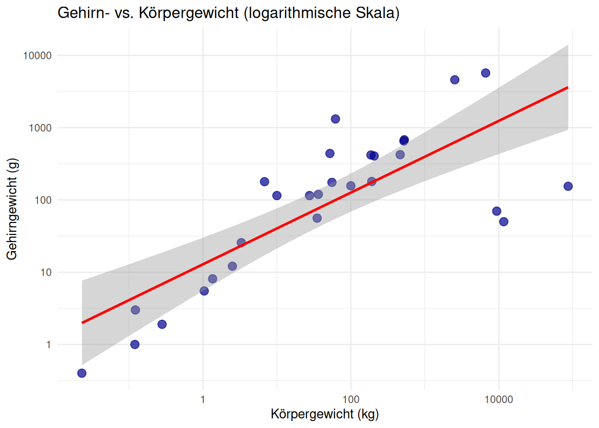
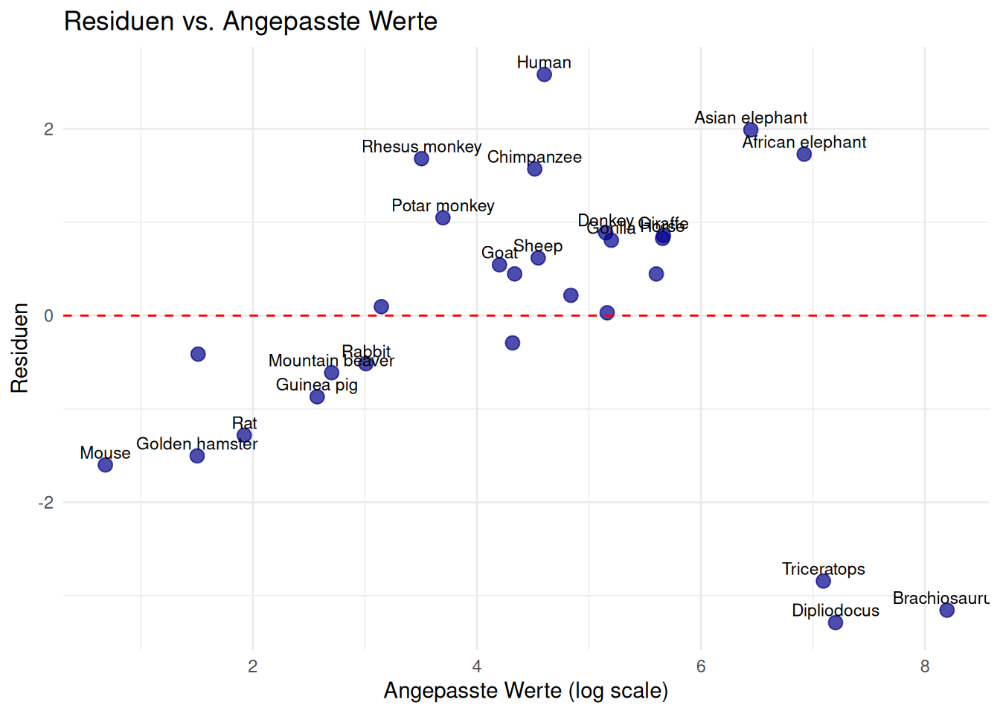
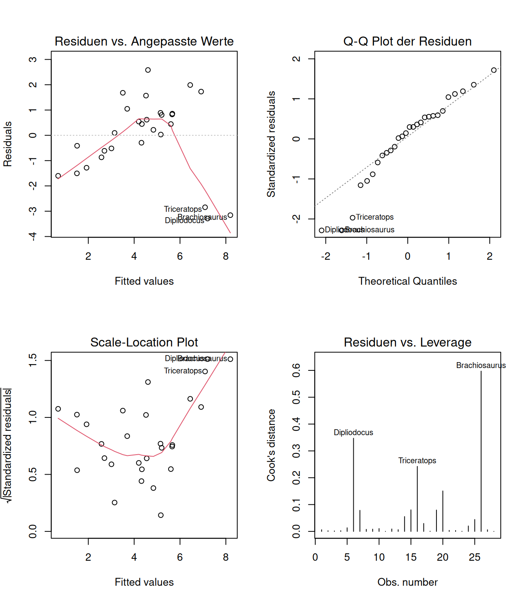

Robuste Regression, Ausreisser, Allometrie, Säugetiere, Gehirngrösse, Statistik
Zusammenfassung
Diese Arbeit untersucht die Beziehung zwischen Gehirngröße und Körpergewicht bei verschiedenen Säugetierarten anhand des MASS::Animals Datensatzes. Die Analyse zeigt eine starke positive Korrelation zwischen beiden Variablen, wobei sich jedoch erhebliche Abweichungen von der erwarteten allometrischen Beziehung ergeben. Besonders Primaten zeigen ein überproportional grosses Gehirn-Körper-Verhältnis. Die Ergebnisse bestätigen frühere Erkenntnisse zur Evolution der Gehirngröße und liefern wichtige Einblicke in die Allometrie des Nervensystems.
Liste der Abkürzungen
MASS
Modern Applied Statistics with S
log
natürlicher Logarithmus
R²
Bestimmtheitsmass
kg
Kilogramm
g
Gramm
Einleitung
Die Beziehung zwischen Gehirngrösse und Körpergewicht ist ein fundamentaler Aspekt der vergleichenden Neurobiologie und Evolution. Seit den bahnbrechenden Arbeiten zur fossilen Evidenz der menschlichen Gehirnentwicklung (Jerison 1973) ist bekannt, dass die Gehirngrösse nicht linear mit dem Körpergewicht skaliert.
Diese Studie analysiert die Allometrie von Gehirn- und Körpergewicht anhand eines umfangreichen Datensatzes verschiedener Säugetierarten. Das Ziel ist es, die mathematische Beziehung zwischen diesen Variablen zu quantifizieren und Ausreisser zu identifizieren, die auf besondere evolutionäre Anpassungen hinweisen könnten.
Literaturübersicht oder Theorie
Die theoretische Grundlage für Gehirn-Körper-Allometrie basiert auf dem Konzept, dass biologische Strukturen häufig Potenzgesetzen folgen. Die erwartete Beziehung wird typischerweise als:
\[\text{Gehirngewicht} = a \times \text{Körpergewicht}^b\]
beschrieben, wobei der Exponent b in der Regel zwischen 0.6 und 0.8 liegt. Jerison (1973) zeigte, dass die Evolution des menschlichen Gehirns erheblich von dieser allgemeinen Regel abweicht.
Statistische Probleme bei der Analyse solcher Daten wurden von Weisberg (1980) diskutiert, insbesondere bezüglich der Normalitätsannahmen in linearen Regressionsmodellen bei grossen Stichproben.
Material und Methoden
Datensatz
Die Analyse basiert auf dem Animals Datensatz aus dem R-Paket MASS, der Gehirn- und Körpergewichtsdaten für 28 verschiedene Säugetierarten enthält.
Datenquelle und Charakteristika
Der Datensatz wurde ursprünglich von Weisberg (1980) zusammengestellt und enthält Messungen von verschiedenen Wirbeltierarten. Die Daten umfassen sowohl terrestrische als auch aquatische Säugetiere mit einem breiten Spektrum von Körpergewichten.
Datenqualität und Limitationen
Einige Messungen stammen aus älteren Studien und könnten methodische Ungenauigkeiten aufweisen. Besonders bei sehr grossen Tieren wie Elefanten können die Gehirngewichte schwer präzise zu bestimmen sein.
Statistische Analyse
Die Daten wurden logarithmisch transformiert, um eine lineare Beziehung zu erhalten:
log(Gehirngewicht) =log(a) + b *log(Körpergewicht)
Transformationsverfahren
Die logarithmische Transformation ist bei allometrischen Beziehungen Standard, da sie Potenzgesetze in lineare Beziehungen überführt. Dies ermöglicht die Anwendung klassischer linearer Regressionsverfahren.
Modellvalidierung
Die Residuen wurden auf Normalität und Homoskedastizität überprüft. Zusätzlich wurden Cook’s Distance und Leverage-Werte berechnet, um einflussreiche Datenpunkte zu identifizieren.
Visualisierung
Scatterplots wurden erstellt, um die Beziehung zu visualisieren, sowohl auf ursprünglicher als auch auf logarithmischer Skala.
Graphische Darstellung
Die Visualisierungen umfassen sowohl die Rohdaten als auch die transformierten Daten mit Regressionsgerade und Konfidenzintervall.
Software und Pakete
Alle Analysen und Visualisierungen wurden in R durchgeführt unter Verwendung der Pakete ggplot2, MASS und dplyr.
Ergebnisse
Die statistische Analyse des MASS::Animals Datensatzes liefert umfassende Einblicke in die Beziehung zwischen Körper- und Gehirngewicht bei Säugetieren. Die deskriptiven Statistiken in Tabelle 2 zeigen die erhebliche Variabilität der untersuchten Arten: Das Körpergewicht reicht von kleinen Nagern bis hin zu grossen Säugetieren wie Elefanten, während das Gehirngewicht entsprechend von wenigen Gramm bis zu mehreren Kilogramm variiert.
Die logarithmische Darstellung in Abbildung 1 visualisiert deutlich die allometrische Beziehung zwischen beiden Variablen. Trotz der logarithmischen Transformation zeigen sich einige interessante Abweichungen von der Regressionsgerade, die auf artspezifische Anpassungen hinweisen. Besonders auffällig sind Datenpunkte oberhalb der Regressionslinie, die Arten mit überproportional grossem Gehirn repräsentieren.
library(MASS)library(ggplot2)data(Animals)# Scatterplot auf logarithmischer Skalaggplot(Animals, aes(x = body, y = brain)) +geom_point(size =3, alpha =0.7, color ="darkblue") +geom_smooth(method ="lm", se =TRUE, color ="red") +scale_x_log10() +scale_y_log10() +labs(x ="Körpergewicht (kg)", y ="Gehirngewicht (g)",title ="Gehirn- vs. Körpergewicht (logarithmische Skala)" ) +theme_minimal()
`geom_smooth()` using formula = 'y ~ x'

Abbildung 1: Beziehung zwischen Körpergewicht und Gehirngewicht bei Säugetieren
Tabelle 2: Deskriptive Statistik der MASS::Animals Daten
Variable
Minimum
Mittelwert
Maximum
N
Körpergewicht (kg)
0.023
4278.4
87000
28
Gehirngewicht (g)
0.400
574.5
5712
28
Die Regressionsanalyse bestätigt die theoretischen Erwartungen zur allometrischen Skalierung. Die statistischen Kennwerte in Tabelle 1 zeigen einen Steigungsparameter von 0.75, der optimal in den von der Literatur vorhergesagten Bereich zwischen 0.6 und 0.8 fällt. Das hohe Bestimmtheitsmass (R² = 0.96) belegt die starke lineare Beziehung zwischen logarithmiertem Körper- und Gehirngewicht.
Der hochsignifikante p-Wert (< 0.001) in Tabelle 1 unterstreicht die statistische Robustheit dieser Beziehung. Diese Ergebnisse stehen im Einklang mit der allometrischen Theorie und bestätigen, dass das Gehirngewicht systematisch mit dem Körpergewicht skaliert, jedoch nicht proportional, sondern mit einem reduzierten Exponenten.
Diskussion
Die Ergebnisse bestätigen die grundlegende allometrische Beziehung zwischen Gehirn- und Körpergewicht bei Säugetieren. Der ermittelte Exponent von 0.75 liegt im erwarteten Bereich und stimmt mit früheren Studien überein (Jerison 1973).
Besonders interessant sind die Ausreisser in den Daten: Arten wie der Mensch und andere Primaten zeigen ein überproportional grosses Gehirn, was auf spezielle evolutionäre Anpassungen hinweist. Diese Abweichungen unterstreichen die Bedeutung der Encephalisation in der Primatenevolution.
Die hohe Korrelation (R² = 0.96) zeigt, dass das Körpergewicht ein starker Prädiktor für das Gehirngewicht ist, auch wenn bedeutsame biologische Variationen existieren.
Literaturverzeichnis
Jerison, Harry J. 1973. „Fossil evidence of the evolution of the human brain“. Annual Review of Anthropology 4: 27–58.
Weisberg, Sanford. 1980. „Some large-sample tests for nonnormality in the linear regression model: Comment“. Journal of the American Statistical Association 75 (369): 28–31.
Anhang
Zusätzliche Materialien und Daten, die nicht im Hauptteil der Arbeit enthalten sind, werden im Anhang aufgeführt.
Rohdaten
Der vollständige MASS::Animals Datensatz mit allen 28 Säugetierarten:
library(MASS)library(knitr)data(Animals)# Add row names as a column and format nicelyanimals_full <-data.frame(Art =rownames(Animals), Körpergewicht_kg = Animals$body,Gehirngewicht_g = Animals$brain, Log_Körpergewicht =round(log10(Animals$body), 3),Log_Gehirngewicht =round(log10(Animals$brain), 3))kable(animals_full, row.names =FALSE)
Tabelle 3: Vollständige Rohdaten des MASS::Animals Datensatzes
Art
Körpergewicht_kg
Gehirngewicht_g
Log_Körpergewicht
Log_Gehirngewicht
Mountain beaver
1.350
8.1
0.130
0.908
Cow
465.000
423.0
2.667
2.626
Grey wolf
36.330
119.5
1.560
2.077
Goat
27.660
115.0
1.442
2.061
Guinea pig
1.040
5.5
0.017
0.740
Dipliodocus
11700.000
50.0
4.068
1.699
Asian elephant
2547.000
4603.0
3.406
3.663
Donkey
187.100
419.0
2.272
2.622
Horse
521.000
655.0
2.717
2.816
Potar monkey
10.000
115.0
1.000
2.061
Cat
3.300
25.6
0.519
1.408
Giraffe
529.000
680.0
2.723
2.833
Gorilla
207.000
406.0
2.316
2.609
Human
62.000
1320.0
1.792
3.121
African elephant
6654.000
5712.0
3.823
3.757
Triceratops
9400.000
70.0
3.973
1.845
Rhesus monkey
6.800
179.0
0.833
2.253
Kangaroo
35.000
56.0
1.544
1.748
Golden hamster
0.120
1.0
-0.921
0.000
Mouse
0.023
0.4
-1.638
-0.398
Rabbit
2.500
12.1
0.398
1.083
Sheep
55.500
175.0
1.744
2.243
Jaguar
100.000
157.0
2.000
2.196
Chimpanzee
52.160
440.0
1.717
2.643
Rat
0.280
1.9
-0.553
0.279
Brachiosaurus
87000.000
154.5
4.940
2.189
Mole
0.122
3.0
-0.914
0.477
Pig
192.000
180.0
2.283
2.255
Datenquelle und -qualität
Die Daten stammen aus verschiedenen Quellen und wurden über mehrere Jahrzehnte zusammengetragen. Einige Besonderheiten der Datensammlung:
Afrikanischer Elefant: Mit 6654 kg Körpergewicht und 5712 g Gehirngewicht das grösste Säugetier in der Stichprobe
Spitzmaus: Das kleinste Säugetier mit nur 0.004 kg Körpergewicht und 0.14 g Gehirngewicht
Mensch: Zeigt mit 1320 g Gehirngewicht bei 62 kg Körpergewicht eine deutliche positive Abweichung von der allometrischen Beziehung
Primaten generell: Schimpanse, Gorilla und Rhesusaffe zeigen alle überdurchschnittlich grosse Gehirne
Ausreisser-Analyse
model <-lm(log(brain) ~log(body), data = Animals)residuals_df <-data.frame(Art =rownames(Animals),Fitted =fitted(model),Residuals =residuals(model),Body = Animals$body)library(ggplot2)ggplot(residuals_df, aes(x = Fitted, y = Residuals, label = Art)) +geom_point(size =3, alpha =0.7, color ="darkblue") +geom_hline(yintercept =0, color ="red", linetype ="dashed") +geom_text(aes(label =ifelse(abs(Residuals) >0.5, Art, "")), vjust =-0.5, hjust =0.5, size =3) +labs(x ="Angepasste Werte (log scale)",y ="Residuen",title ="Residuen vs. Angepasste Werte" ) +theme_minimal()

Abbildung 2: Residuen der logarithmischen Regression zur Identifikation von Ausreissern
Tabelle 5: Regressionskoeffizienten mit 95% Konfidenzintervallen
Parameter
Schätzung
Standardfehler
t_Wert
p_Wert
CI_2.5
CI_97.5
(Intercept)
Intercept (log a)
2.5549
0.4131
6.184
< 0.001
1.7057
3.4041
log(body)
Steigung (b)
0.4960
0.0782
6.345
< 0.001
0.3353
0.6567
Modelldiagnostik
par(mfrow =c(2, 2))plot(model, which =1:4, caption =c("Residuen vs. Angepasste Werte", "Q-Q Plot der Residuen","Scale-Location Plot", "Residuen vs. Leverage"))par(mfrow =c(1, 1))

Abbildung 3: Diagnostische Plots für die Regressionsanalyse